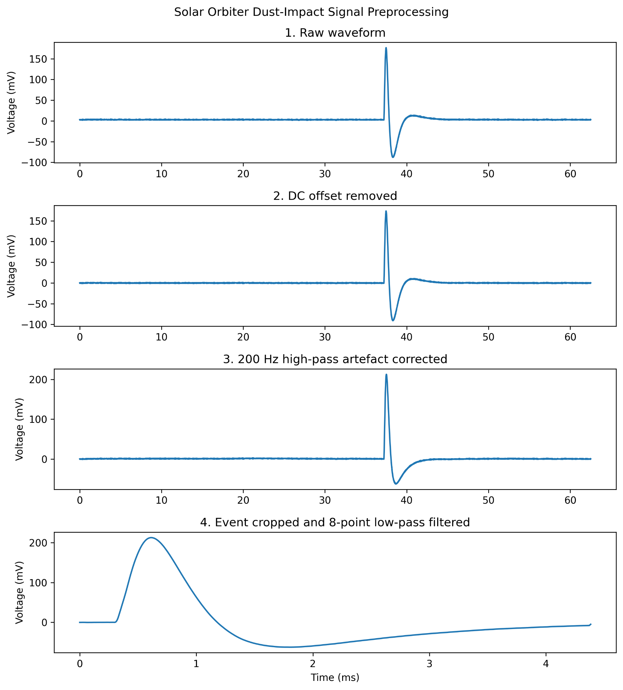
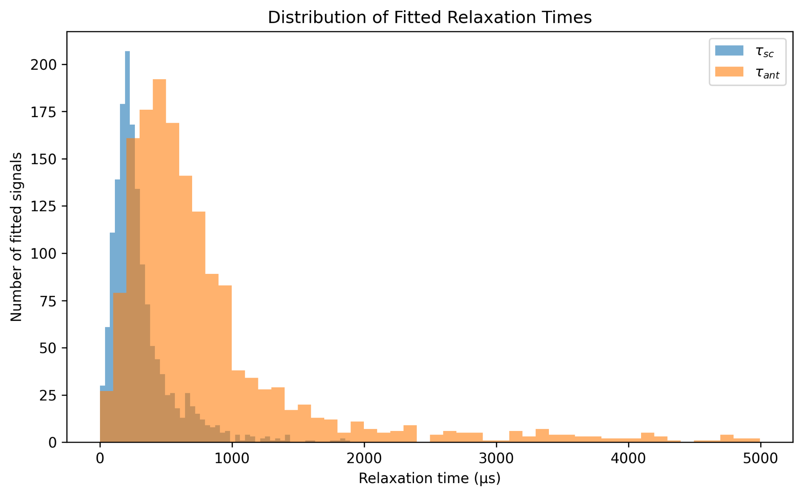
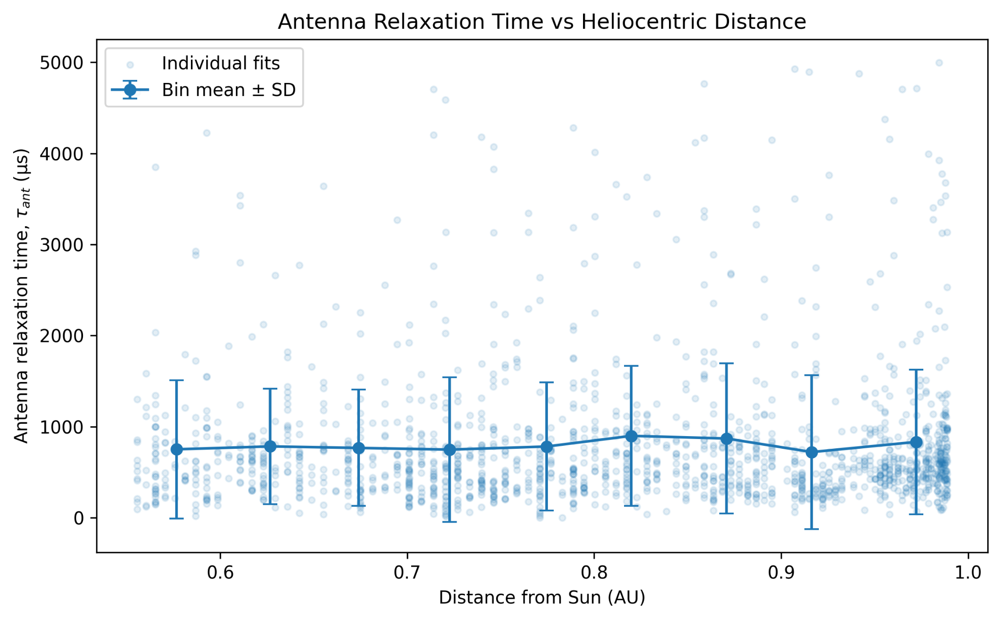

Project 03
Modelling dust impacts in Solar Orbiter spacecraft data
Signal preprocessing, instrument correction, physics-based nonlinear fitting and mission-scale population analysis using Solar Orbiter RPW telemetry.
Preprocessing
Correcting the measurement chain before fitting.
The raw RPW waveforms required DC-offset removal, numerical correction of an artefact introduced by the onboard 200 Hz high-pass filter, event extraction and an 8-point running-average filter.

Progressive preprocessing of a dust-impact waveform.
Physical model fitting
Estimating physical parameters from each event.
I fitted a physical model describing the separate spacecraft and antenna potential responses. SciPy nonlinear optimisation estimated collected charge, relaxation times, rise time, charge fraction and separate response start times.
Fits were assessed not only by residual error, but also by whether the resulting parameter estimates were physically plausible.

Measured voltage perturbation, total model fit and the spacecraft and antenna components.
Population analysis
Scaling the analysis from one waveform to thousands.
The single-event analysis was turned into an automated batch pipeline. After fitting 1,920 signals, boundary-limited and implausible parameter estimates were removed, leaving 1,550 quality-controlled fits for population analysis.
Python, NumPy, SciPy, cdflib, numerical integration, nonlinear least-squares fitting, uncertainty analysis, batch processing, quality control

Distribution of fitted spacecraft and antenna relaxation times.
Mission-scale context
Combining fitted results with spacecraft ephemeris data.
The fitted event table was combined with Solar Orbiter heliocentric-distance data to examine whether fitted parameters varied across the spacecraft trajectory.

Individual fitted events and binned population behaviour versus distance from the Sun.